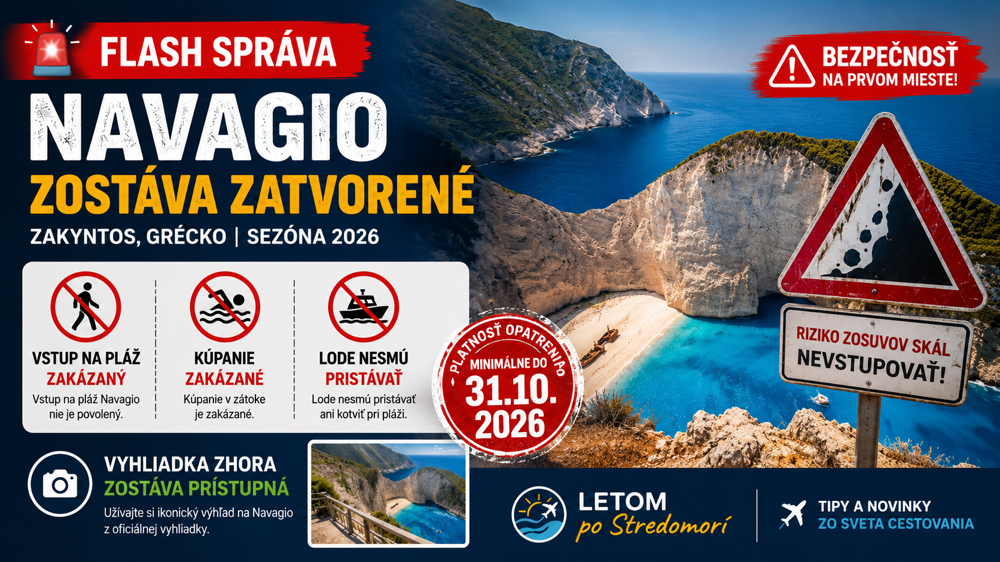
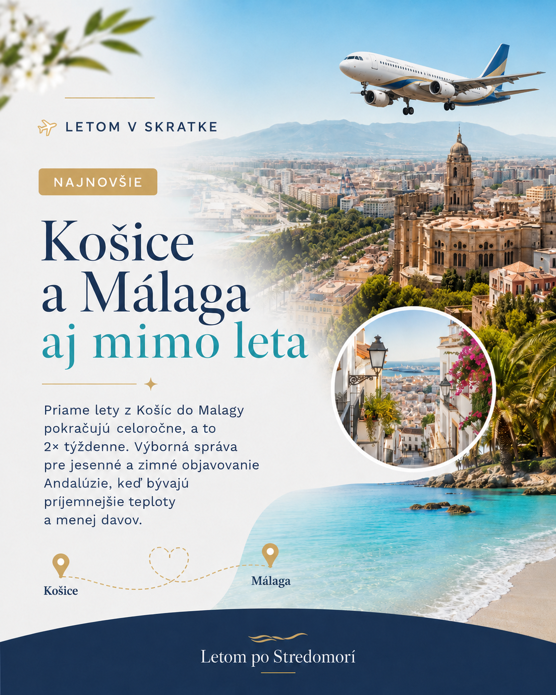
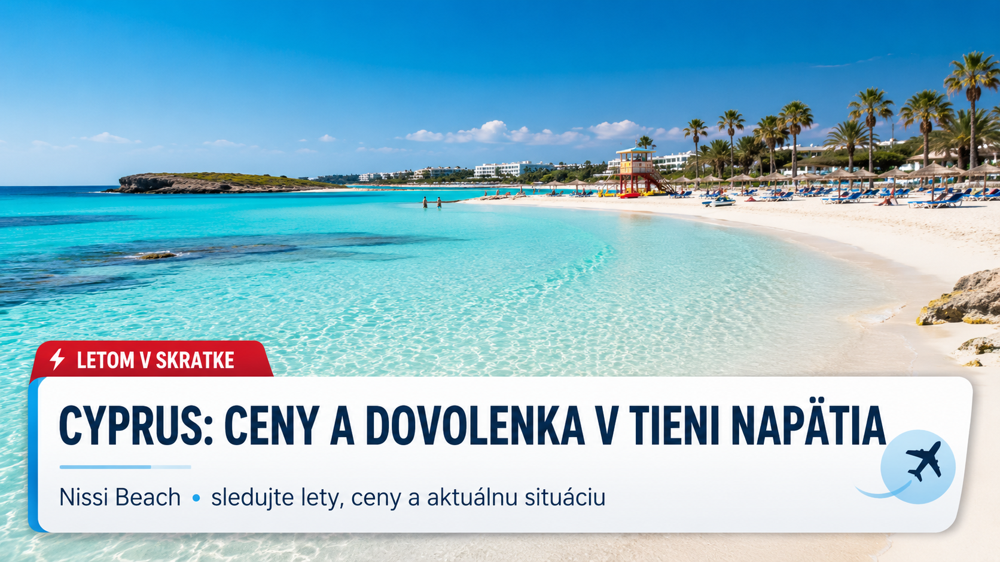
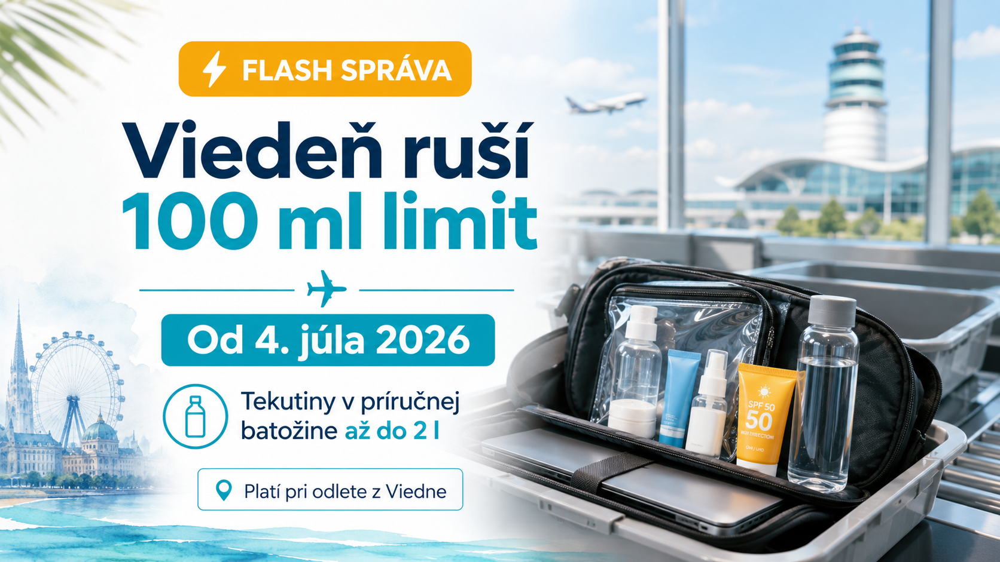

Zakyntos • Bezpečnostné upozornenie?? Navagio zostáva zatvorené aj v sezóne 2026
Jedna z najznámejších pláží v Stredomorí zostáva pre návštevníkov uzavretá minimálne do 31. októbra 2026.
Letom v skratke
Kompletný archív krátkych cestovateľských bleskoviek o letoch, letiskách, dovolenkách a Stredomorí. Najnovšie správy sú vždy hore.

Zakyntos • Bezpečnostné upozornenieJedna z najznámejších pláží v Stredomorí zostáva pre návštevníkov uzavretá minimálne do 31. októbra 2026.
Ryanair od zimy 2026/2027 posilní Bratislavu o štvrté bázované lietadlo a plánuje 23 zimných liniek. Úplnou novinkou bude priama linka do Turína.
Ryanair pripravuje na zimu 2026/2027 výrazné posilnenie Bratislavy. Na Letisku M. R. Štefánika má pribudnúť štvrté bázované lietadlo a dopravca plánuje zimný letový poriadok s 23 linkami.
Najväčšou novinkou je úplne nová priama linka Bratislava – Turín. Lietať sa má od 26. októbra 2026 dvakrát týždenne, v pondelok a sobotu. Turín síce nie je klasická plážová destinácia, ale pre milovníkov Talianska môže byť výborným mestským výletom – s historickým centrom, talianskou gastronómiou a výhľadmi na Alpy.
Pre cestovateľov smerujúcich za slnkom je dôležitá aj širšia zimná ponuka Ryanairu z Bratislavy. V zimnom letovom poriadku majú figurovať aj obľúbené južné a stredomorské destinácie ako Málaga, Alicante, Malta, Pafos, Palermo, Trapani, Bari, Neapol, Lamezia Terme či Thessaloniki.
To znamená, že z Bratislavy bude aj mimo hlavnej letnej sezóny jednoduchšie vyraziť za morom, slnkom alebo predĺženým víkendom. Väčší počet letov môže priniesť viac termínov, lepšie kombinácie a väčšiu šancu nájsť výhodnú letenku.
Ak plánujete zimný únik k moru, oplatí sa sledovať najmä Málagu, Alicante, Maltu, Cyprus, Sicíliu a juh Talianska. Mimo leta bývajú tieto miesta pokojnejšie, často lacnejšie a stále veľmi príjemné na cestovanie.
Kategória: Lety z Bratislavy · sezóna: zima 2026/2027 · typ: letecká novinka · istota: vysoká – potvrdené z Ryanair a Letiska Bratislava. Zdroj: Ryanair, Letisko Bratislava, Routes / AviationWeek.

? Flash správa · LetyPriame spojenie z Košíc do Malagy môže byť zaujímavé hlavne pre cestovateľov z východu Slovenska.
Priame spojenie z Košíc do Malagy je zaujímavou novinkou hlavne pre cestovateľov z východného Slovenska. Ryanair spustil linku medzi Košicami a Malagou od marca 2026 a podľa Letiska Košice má byť prevádzkovaná celoročne dvakrát týždenne, v pondelok a štvrtok.
Malaga dáva zmysel nielen ako letná destinácia pri mori, ale aj ako jesenný alebo zimný únik za miernejším počasím. Mesto ponúka kombináciu pobrežia, historického centra, výletov po Andalúzii a možností ako Caminito del Rey či výlety smerom na Granadu alebo Córdobu.
Tip Letom po Stredomorí: Malaga je dobrá voľba pre tých, ktorí nechcú len pláž, ale aj mesto, jedlo, výlety a príjemnejšiu atmosféru mimo najväčších letných horúčav.

Cyprus • Nissi Beach • Bezpečnosť • Ceny • LetyCyprus zostáva otvorený pre turistov a nie je priamo zasiahnutý vojnou na Blízkom východe. Napätie v regióne však môže ovplyvniť leteckú dopravu, ceny paliva, transfery alebo výlety.
Zároveň môže nižší dopyt tlačiť niektoré ceny ubytovania nadol. Pri plánovaní dovolenky preto dáva zmysel sledovať nielen cenu hotela, ale aj podmienky letu, transferov a výletov.
Pred cestou odporúčame sledovať stav letu, pokyny leteckej spoločnosti alebo cestovnej kancelárie a aktuálne cestovné odporúčania.
Na mieste sa odporúča vyhýbať protestom a politickým zhromaždeniam a riadiť sa pokynmi miestnych úradov.
Informácie odporúčame pred cestou overiť v oficiálnych cestovných odporúčaniach a u leteckej spoločnosti.

? Flash správa · LetiskáPodľa dostupných informácií sa má na letisku Viedeň-Schwechat zjednodušiť bezpečnostná kontrola pri odlete z Viedne.
Podľa dostupných informácií sa má od 4. júla 2026 na letisku Viedeň-Schwechat zjednodušiť bezpečnostná kontrola. Vďaka novým CT skenerom by mali môcť cestujúci pri odlete z Viedne preniesť v príručnej batožine tekutiny až do 2 litrov.
Dôležité je, že toto pravidlo sa týka hlavne odletu z Viedne. Pri spiatočnom lete môže na inom letisku stále platiť starý 100 ml limit, preto sa oplatí skontrolovať pravidlá oboch letísk.
Sledujem možnosti letov do stredomorských destinácií a pripravujem z nich praktické tipy.
Cieľom je vyberať spojenia, ktoré dávajú zmysel pre bežného cestovateľa zo Slovenska: dostupné termíny, rozumné prestupy, použiteľné časy odletov a destinácie, kde sa dá spojiť more, mesto aj krátke výlety.
Niektoré destinácie sú príjemné aj na jar alebo jeseň, keď býva menej ľudí a lepšie teploty.
Jar a jeseň vedia byť dobrým kompromisom pre tých, ktorí nechcú najväčšie horúčavy ani plné pláže. Pri plánovaní však treba pozerať sezónnosť letov, otvorené služby a počasie v konkrétnom regióne.
Pred odletom sa oplatí overiť rozmery batožiny, pravidlá aerolinky a dopravu z letiska.
Pri nízkonákladových letoch môže cenu výrazne zmeniť batožina, výber sedadla alebo odbavenie. Pred rezerváciou je preto dobré pozrieť finálnu cenu až po pridaní služieb, ktoré naozaj potrebuješ.
Stredomorské ostrovy ponúkajú pláže, mestá, výlety autom aj krátke video inšpirácie.
Ostrovy sú dobré na rýchlu orientáciu v destinácii: dajú sa rozdeliť na pláže, mestá, výhľady, výlety autom a miesta, ktoré fungujú aj mimo hlavnej sezóny.